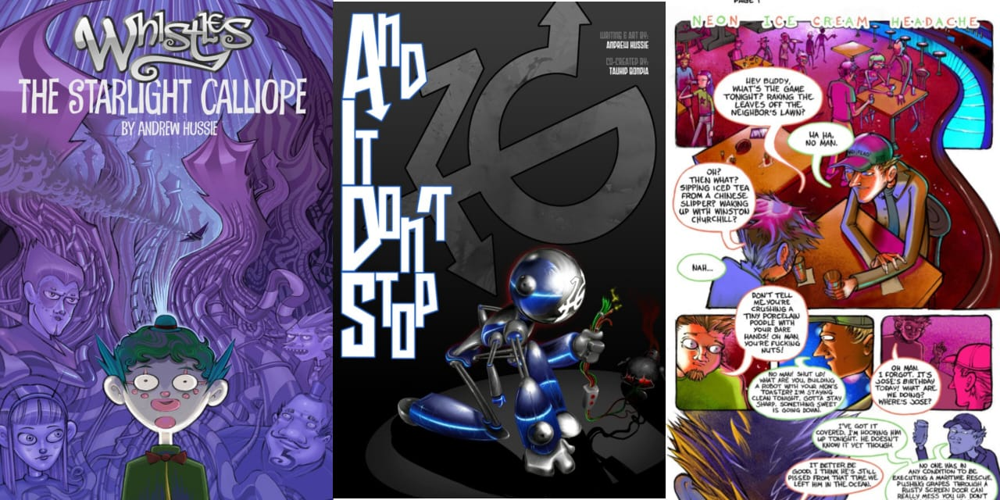
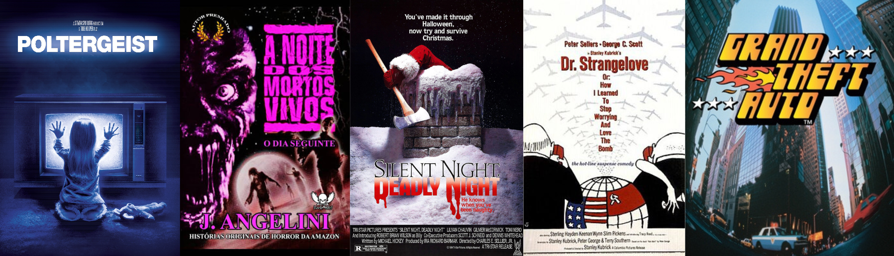

4 — Jailbreak (Rápido)
135 páginas, Sep 2006 - Feb 2007
Iteratividade: Sendo a primeira, é a mais experimental. O humor subverte a lógica das páginas. Tem escatologia, gore e humor embasado em homoafetividade, mas não se restrinja, são apenas desenhos no Paint.
4.1 — Trama
Parte 1 (1) — Uma chave circula comicamente entre vários prisioneiros desencadeando mortes comicamente brutais.
Parte 2 (45) — Enquanto o 1° prisioneiro lida com uma broca, o 2° constrói seu robô chamado Logorg.
Parte 3 (68) — A história se bifurca, você pode acompanhar a perspectiva do 1° prisioneiro voltando pra sua sela, usando um intestino como corda (69-77) ou do 2° arrombando a porta com a broca e desbloqueando a nova sala (78-85). Depois disso a história acelera pro 1° final (o mais dramático).
Parte 4 (110) — A história reinicia para mostrar uma linha alternativa onde elfos são invocados.
4.2 — Análise
O uso de elementos do cenário e a ação quase que sem falas remete a humor gestual de cinema mudo. Essas características se perpetuam nas obras de MSPA, e a estrutura de jogo nos induz a crer que realmente controlamos esses personagens.

7 — Team Special Olympics
Obra 1 — Whistles: The Starlight Calliope (153 páginas)
Whistles, um palhaço do circo Calíope da Luz Estelar, era amado por todos. Um dia, um acidente quase lhe custou a vida, e ele se viu exposto ao submundo corrupto do circo, repleto de assassinatos e canibalismo. Forçado a fugir, ele vivencia as dificuldades do mundo, como saudades de casa e prostituição.
Obra 2 — And It Don't Stop (40 páginas)
AIDS, para os íntimos, é uma história completa, sobre um cara (Ice Cream Man) que entra numa competição de batalhas de rap com rinhas de robôs, num chaveamento de 7 rodadas.
"Há muitos anos, Andrew Hussie e eu colaboramos em uma história em quadrinhos que era (mesmo sem sabermos na época) 8-Mile vs Real Steel. Por colaboração, acho que devo dizer, desisti muito cedo e Andrew terminou a coisa como um campeão." -Tauhid Bondia
Obra 3 — Neon Ice Cream Headache (11 páginas)
Novamente falando de sorvete, os cara fazem o maluco entrar na tv (e sair a là poltergeist)
Os amigos totalmente loucos e flagrantes de José lhe dão um presente de aniversário super fofo. Foi planejado para fazer parte de uma coleção maior de histórias relacionadas que nunca foi concluída.

Blurbs — Algumas coletâneas de Tirinhas
1 — Steep Price For Pie (16 páginas)
Tortas são frequentemente retratadas como um alimento desejado, essa série dedica-se a isso.
2 — Inappropriate Time For Ham (32 páginas)
Presunto por outro lado, é dito com inconveniente.
3 — Riddler's Gammon (12 páginas)
Representado pela carta de tarot do louco. Personagens desse tipo, como palhaços, são recorrentes. As peripécias de um bobo que importuna as pessoas e fala rimando.
4 — Humanimals (20 páginas)
Quebra de expectativa, elementos mudam drasticamente de um quadro para o outro. Homens com partes de animais de forma pouco funcional, ao mesmo tempo que se encontra no vale da estranheza, tem um pouco de erotismo devido as piadas de conotação sexual.
5 — Zoosmells (12 páginas)
Te introduz ao gosto pop e cinéfilo. O termo 'zoo smell' é usado em expressões populares, nomes de filmes, jogos e músicas. Menções de Who's on First , A Noite dos Mortos Vivos, Silent Night Deadly Night, Dr. Strangelove, GTA e a música that's amore - Dean Martin.
